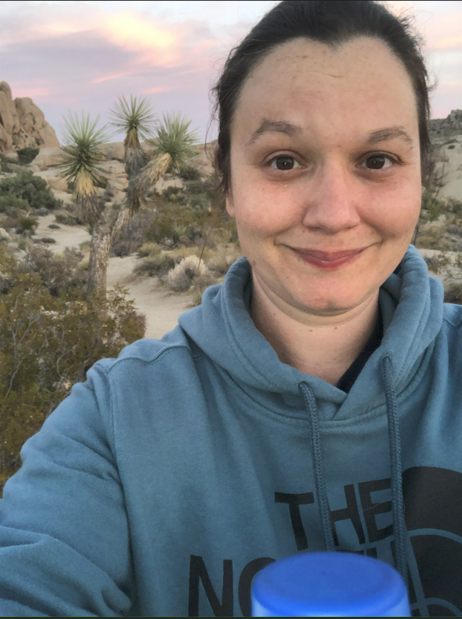
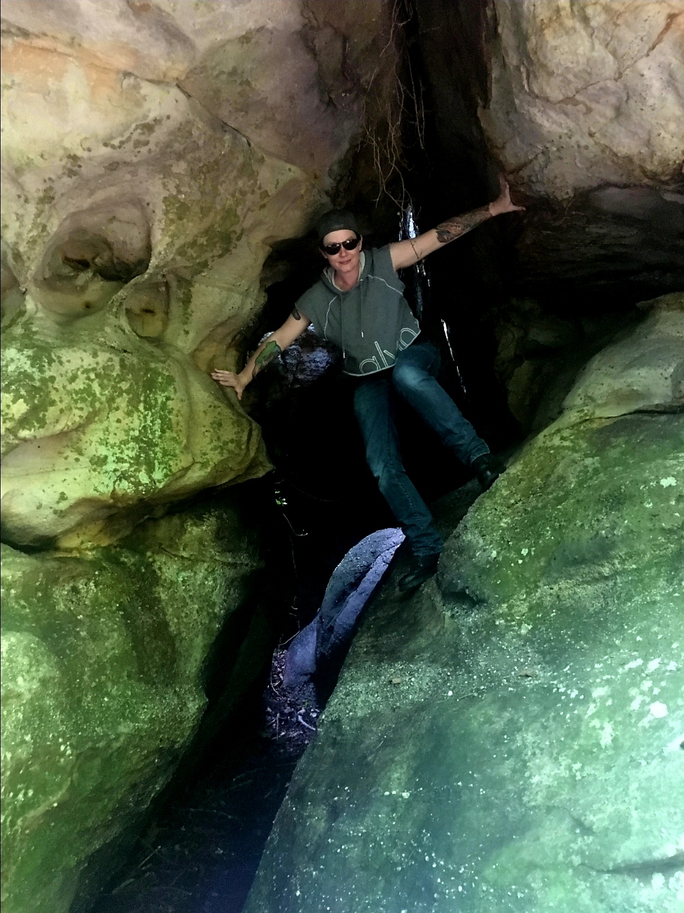

I am 43 years old & have lived in Louisiana for most of my life. I have a passion for our National Parks, especially the parks out West. I absolutely love the outdoors and am happy doing most outdoor recreational activities. Some of my favorites include, nature hiking, fishing, camping, exploring, kayaking, and rock climbing. I hope one day to get the courage to pack everything up and move to some beautiful town out West where I can enjoy these magical places regularly. I also have an interest in everything homesteading. Over the past few years, I have been planting vegetables, have several fruit trees, and have been studying quite a bit about living off-grid and a more self-sustaining lifestyle.
I have graduated from college more than once. I first graduated back in 2004 with an Associate of Applied Science in Industrial Management, and with a Machine Tool Certification. I worked for several years as a Machinist, of which I loved every second. Later, I decided to go back to school and obtained another Associate of Applied Science, this time with a degree in Nursing, passed the boards, and became a Registered Nurse. Now, I find myself on another educational adventure, this time to become skilled in Coding and Web Design. I am hoping to one day have the skill-set to transition this knowledge into my next career adventure.
Last, but certainly not least, I am a Mom. I have an amazing and wonderful son who I am very proud of. I can not begin to say how much I enjoyed watching this beautiful baby who I once cradled in my arms grow up to be such a responsible, funny and kind human being. Every day was a gift, even those teenage years. As a parent, I could not help but make mistakes. Afterall, I am human. Then comes moments where I see this person I brought up really doing well, succeeding at life, and I can't help but feel like all of my literal blood, sweat and tears were worth it. There are those moments where I can't help but think, "I didn't just do okay, but I did Good".
 